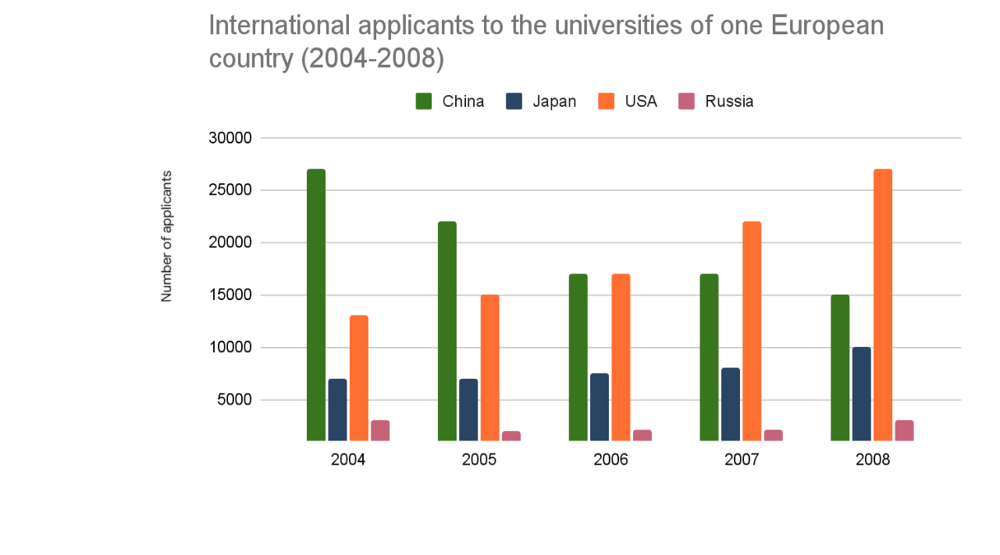

You should spend about 20 minutes on this task.
The chart below shows the number of international applicants to the universities of one European country.
Summarize the information by selecting and reporting the main features, and make comparisons where relevant.
You should write at least 150 words.
You should spend about 40 minutes on this task.
Many people think modern communication technology is having some negative effects on social relationships. Do you agree or disagree?
You should write at least 250 words